Producto
Impresión 3D (escudos)
Escudos heráldicos 3D: configurador con precio al instante y prototipo.
prototipo · Última: 13/11 11:29
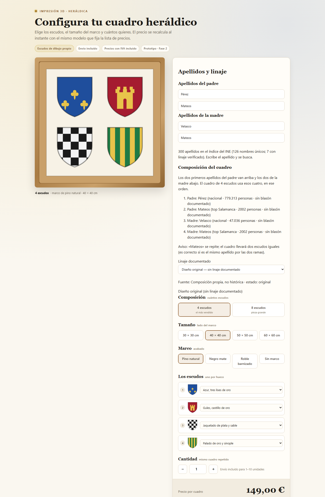
Un solo sitio para entrar a todo lo que hay en marcha. Las tarjetas solo enlazan URLs públicas; las de casa llevan su sello.
Versión pública · solo enlaces que abren desde cualquier sitio
Escudos heráldicos 3D: configurador con precio al instante y prototipo.

Pizarra táctica del club y demo comercial de gestión de clubes.
Demo: producto comercial de gestión. Pizarra: la app que ya usa el club.
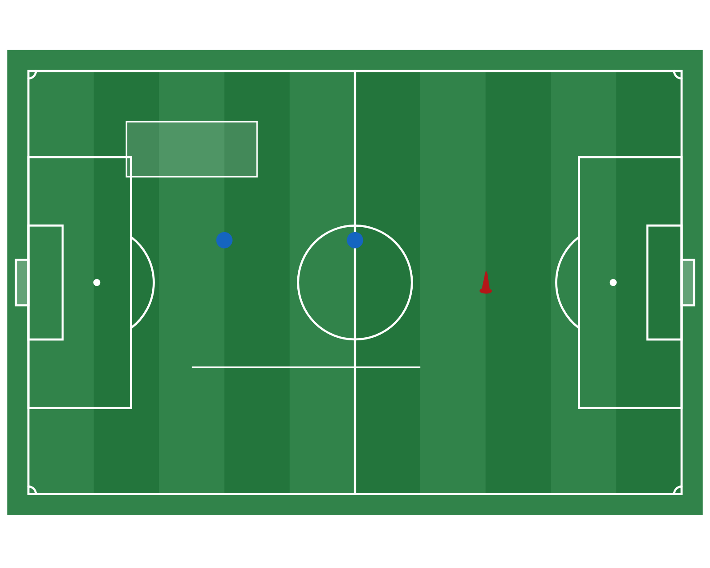
Fútbol federado de Castilla y León: demo pública restaurada.
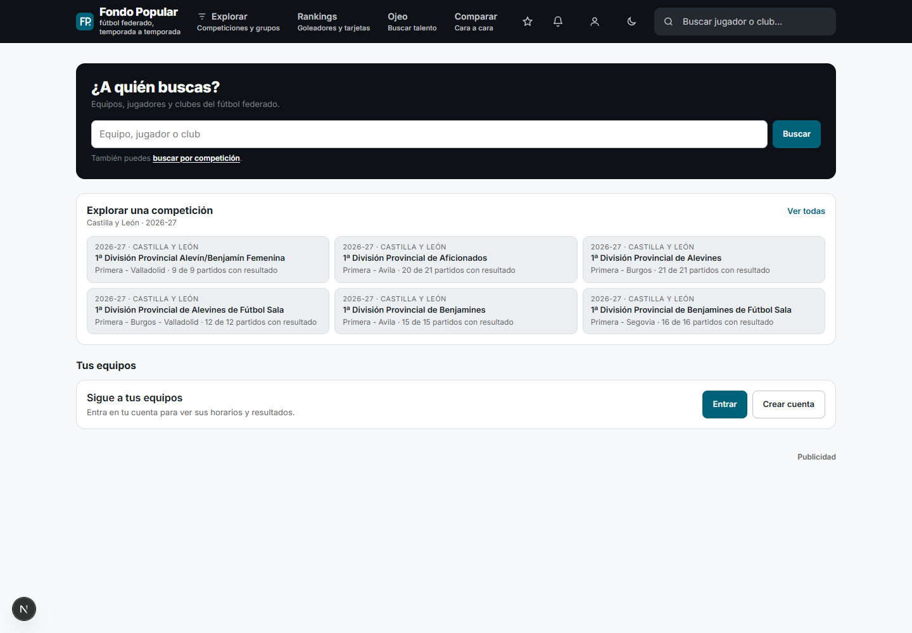
Portal de contenido de datos e IA: paquetes, guías y datasets.
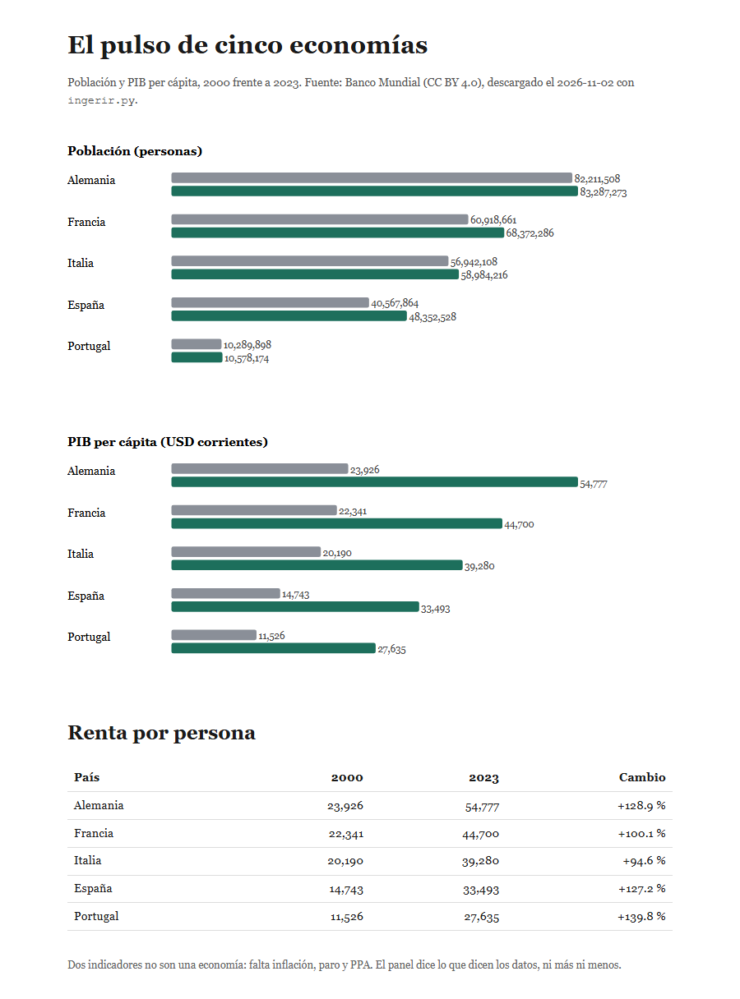
Temario de oposiciones de informática C1; demo estática navegable.
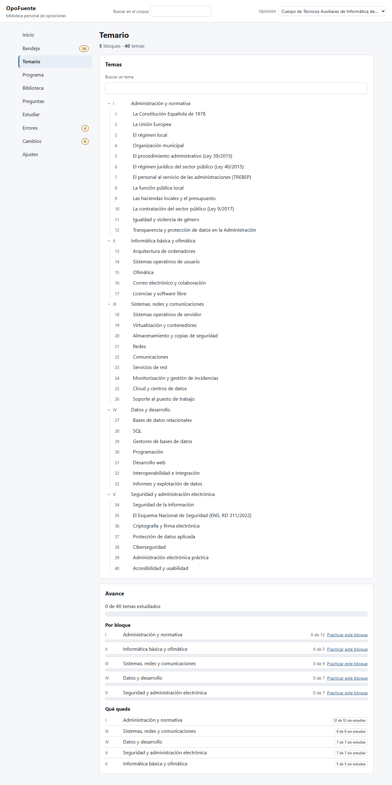
Árbol familiar con vivos ocultos (vista de demostración).
Convocatorias de informática: vista estática del vigía.
Web personal: quién soy y qué proyectos hay publicados.
Comparador de precios con API y base de datos; se abre en el PC.
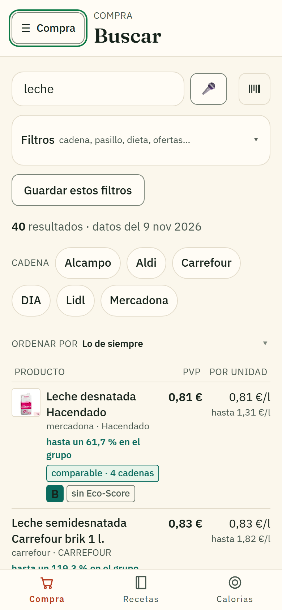
Buscador con panel FastAPI y SQLite; se abre en el PC.
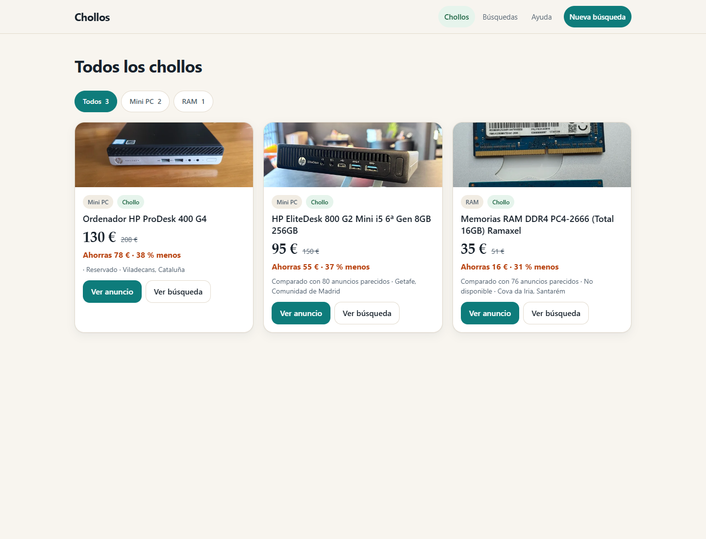
Cuaderno de campo: demo pública; la versión con PostgreSQL queda privada.
Demo pública; la app completa con datos reales se abre por Tailscale desde el lanzador privado.
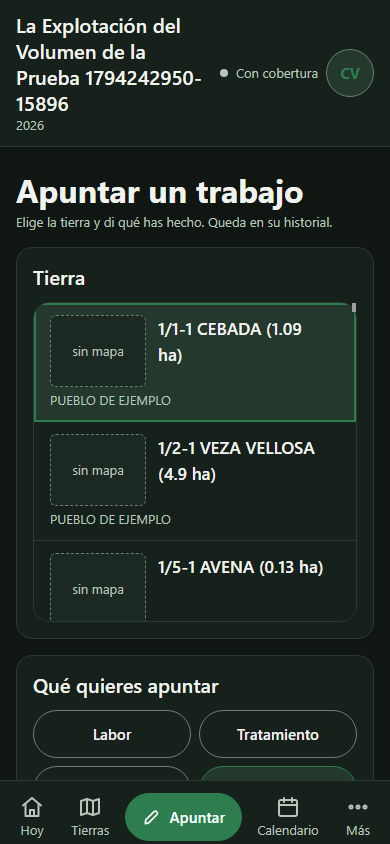
Entreno, reloj y análisis de sueño, HRV y carga.
HTTPS del tailnet (Tailscale Serve): abre con Tailscale activo, no desde Internet.
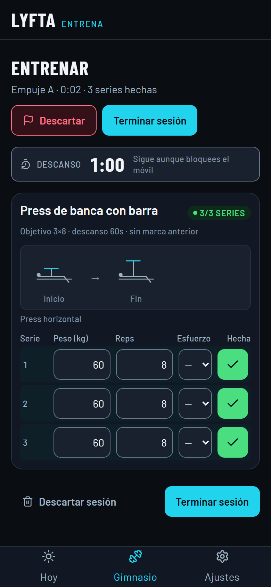
Catálogo de repositorios con RAG neuronal y guardados.
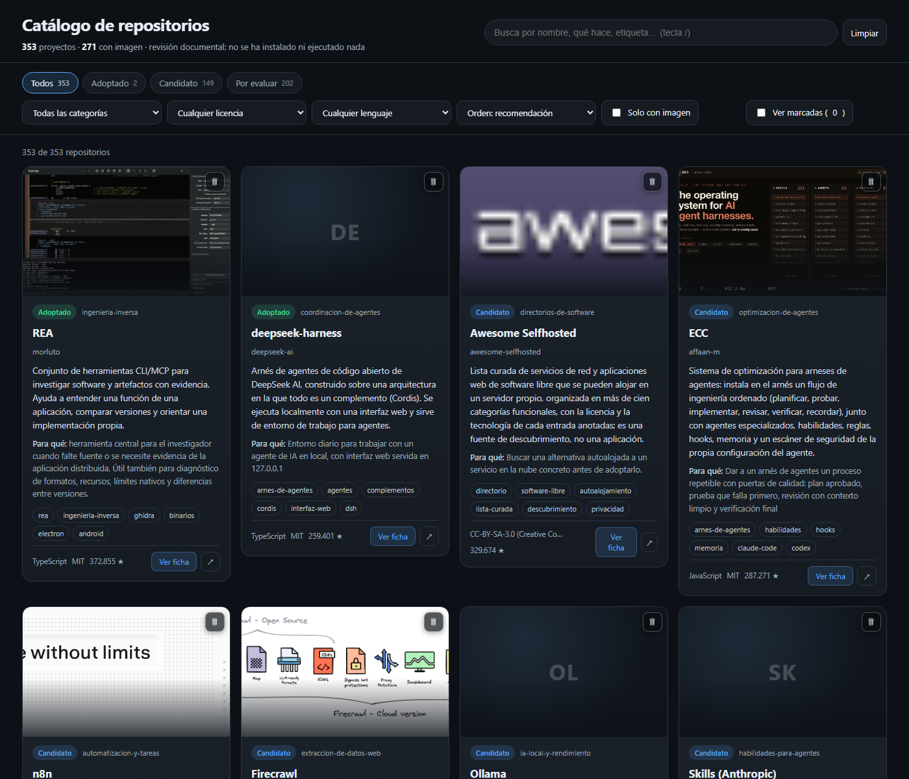
Infraestructura, servicios y despliegue de todos los proyectos.
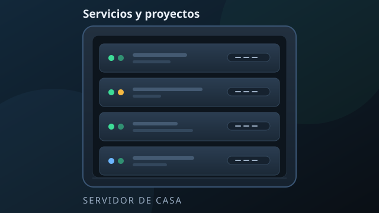
Laboratorio de casa: virtualización, servicios y agentes autónomos.
Apuntes y trabajos del máster: Bioinformática, CAP y Criptografía.
Trabajo de fin de máster: memoria, pruebas y anexos.
Solo servicios públicos comprobados; sin IPs ni URLs privadas.
Sin incidentes registrados desde que se guarda el historial (máx. 20).